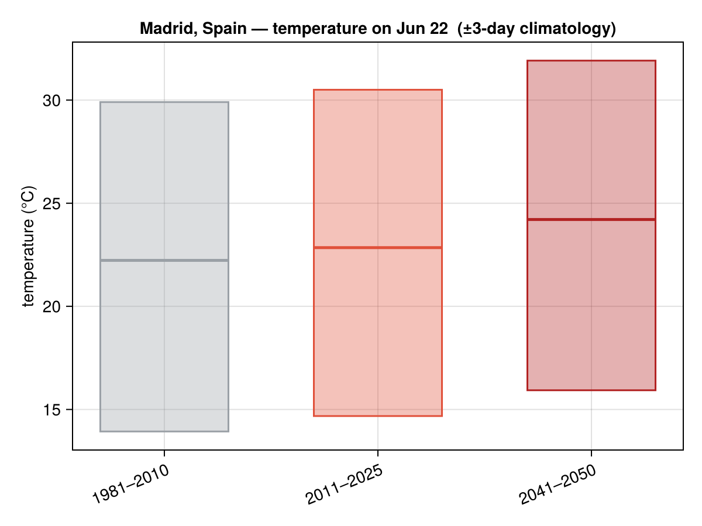
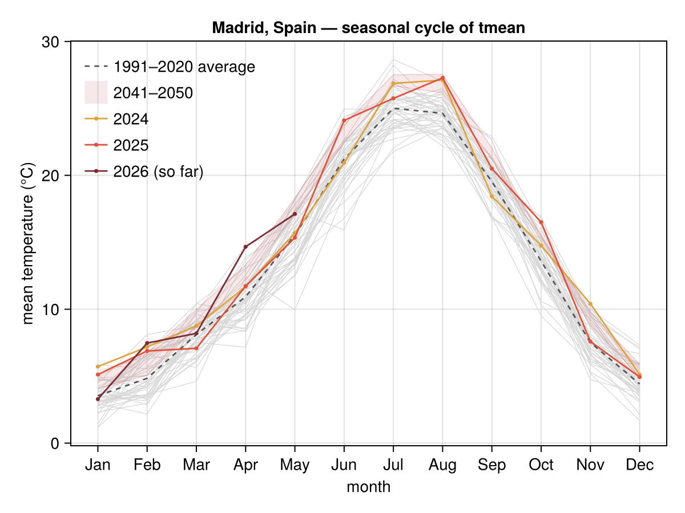
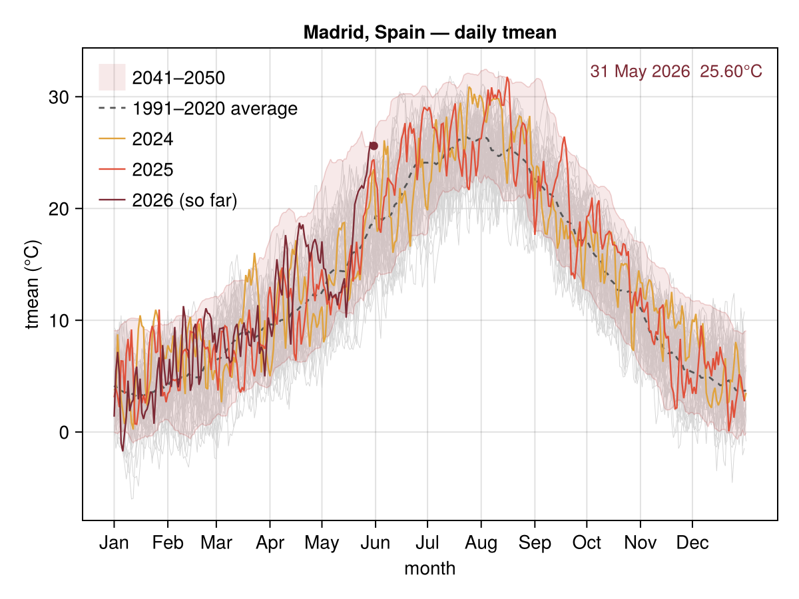

Madrid, Spain
Temperature climatology for Madrid, Spain — from climate_day_comparison, climate_monthly and climate_daily. History is NASA POWER (1981→present, keyless and quota-free); the future band is a bias-corrected CMIP6 ensemble for 2041–2050. The series ship as a committed offline fixture (see Caching), so these figures render with no network and no quota. This page is generated by docs/make_locations.jl.


